# 编译原理 01 - 词法分析
词法分析： 输入（程序文本 / 字符串 s）--> 输出（词法单元流）
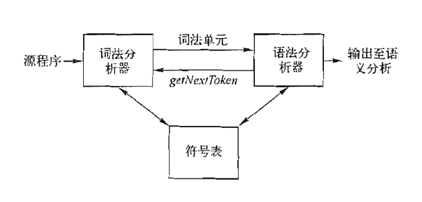
# 词法分析器的三种设计方法（由易到难）
- 词法分析器生成器（如 ANTLR）
- 手写词法分析器
- 自动化词法分析器 (自己实现一个词法分析器生成器)
生产环境下的编译器（如 gcc）通常选择手写词法分析器
# antrl 的使用
输入： 词法单元的规约 -SimpleExpr.g4
输出：词法分析器 - SimpleExprLexer.java
SimpleExprLexer.java 编译后 接受输入文件 并输出 token 流
# .g4 文件的结构
第一行： grammar SimpleExpr ; 给接下来的文法起个名字 名字要与文件名一致
** 如果文件里只包含词法部分 用 lexer grammar SysYLexer **
每一行都要以分号结尾
@header {} 括号里的东西会自动拷贝到到 java 文件中
语法规则见下面示例
SimpleExpr.g4:
grammar SimpleExpr;
import SimpleExprRules;
@header{
package simpleexpr;
}
prog : stat* EOF ;
stat : expr ';'
| ID '=' expr ';'
| 'if' expr ';'
;
expr : expr ('*' | '/') expr
| expr ('+' | '-') expr
| '(' expr ')'
| ID
| INT
| FLOAT
;
// 到这里描述的其实还是语法结构
SimpleExprRules.g4:
lexer grammar SimpleExprRules;
SEMI : ';' ;
ASSIGN : '=' ;
IF : 'if' ;
MUL : '*' ;
DIV : '/' ;
ADD : '+' ;
SUB : '-' ;
LPAREN : '(' ;
RPAREN : ')' ;
ID : (LETTER | '_') WORD* ;
INT : '0' | ([1-9] DIGIT*) ;
FLOAT : INT '.' DIGIT*
| '.' DIGIT+
;
WS : [ \t\r\n]+ -> skip ;
//SL_COMMENT : '//' .*? '\n' -> skip ;
SL_COMMENT2 : '//' ~[\n]* '\n' -> skip;
DOC_COMMENT : '/**' .*? '*/' -> skip ;
ML_COMMENT : '/*' .*? '*/' -> skip ;
fragment LETTER : [a-zA-Z] ;
fragment DIGIT : [0-9] ;
fragment WORD : LETTER | DIGIT | '_' ;
//以上才是真正的词法部分
# 用编程方式使用 ANTLR 4 生成的 xxxlexer.java
package simpleexpr;
import org.antlr.v4.runtime.CharStream;
import org.antlr.v4.runtime.CharStreams;
import org.antlr.v4.runtime.CommonTokenStream;
import org.antlr.v4.runtime.Token;
import org.antlr.v4.runtime.tree.ParseTree;
import java.io.FileInputStream;
import java.io.IOException;
import java.io.InputStream;
public class SimpleExprTest {
public static void main(String[] args) throws IOException {
System.out.println("SimpleExprTest ...");
InputStream is = System.in;
String file;
if (args.length > 0) {
file = args[0];
is = new FileInputStream(file);
}
CharStream input = CharStreams.fromStream(is);
//SimpleExprLexer 是.g4文件生成的java类 input必须是CharStream格式
SimpleExprLexer lexer = new SimpleExprLexer(input);
lexer.getAllTokens().forEach(System.out::println);
}
}
# 正则表达式
基本的知识就不记录了 记录一些重要的
- 非贪婪匹配
.*? - 反向引用 要引用的用（）括起来，后面引用通过子表达式下标访问，如 \1，下标从 1 开始
- look ahead ?<= 符号，表示前面字符要满足 xxx，但不匹配 xxx
- look back ?= 符号，表示后面字符要满足 xxx，但不匹配 xxx
# NFA 与 DFA
NFA：非确定性自动机 DFA: 确定性有穷自动机（Deterministic Finite Automaton)
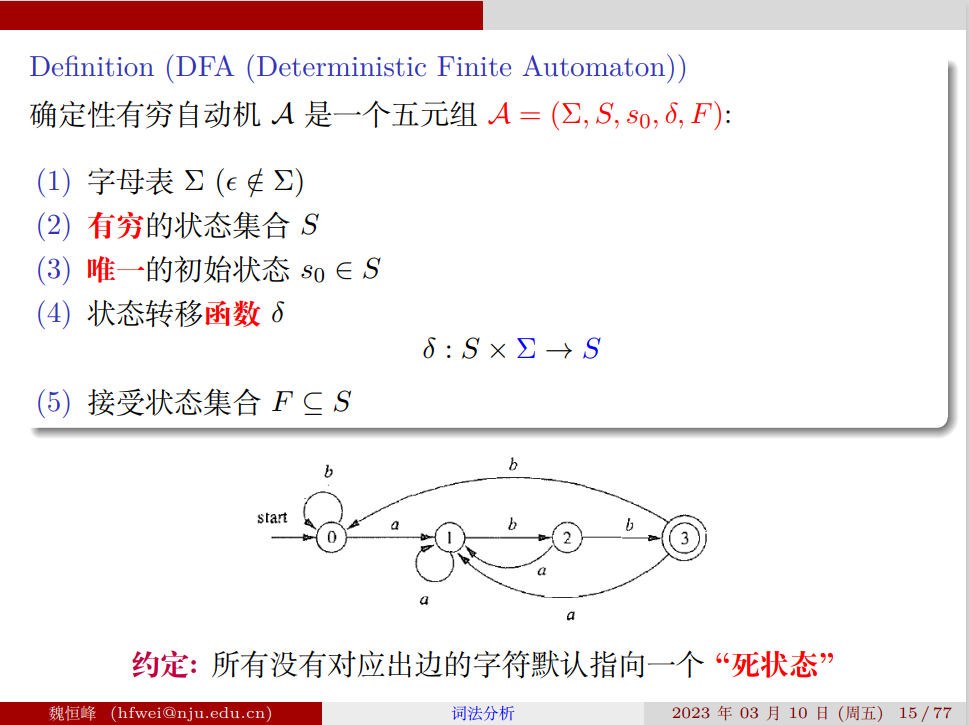
区别：
- NFA 简洁易于理解，便于描述语言 L (A)
- DFA 易于判断 x 属于 L (A)，适合产生词法分析器
其中 L (A) 是使当前自动机能进入接受状态的输入集合
一般用 NFA 描述语言，用 DFA 实现词法分析器
实现词法分析器的步骤：RE --> NFA --> DFA --> 词法分析器
如图： 根据 DFA 生成 RE 不需要掌握
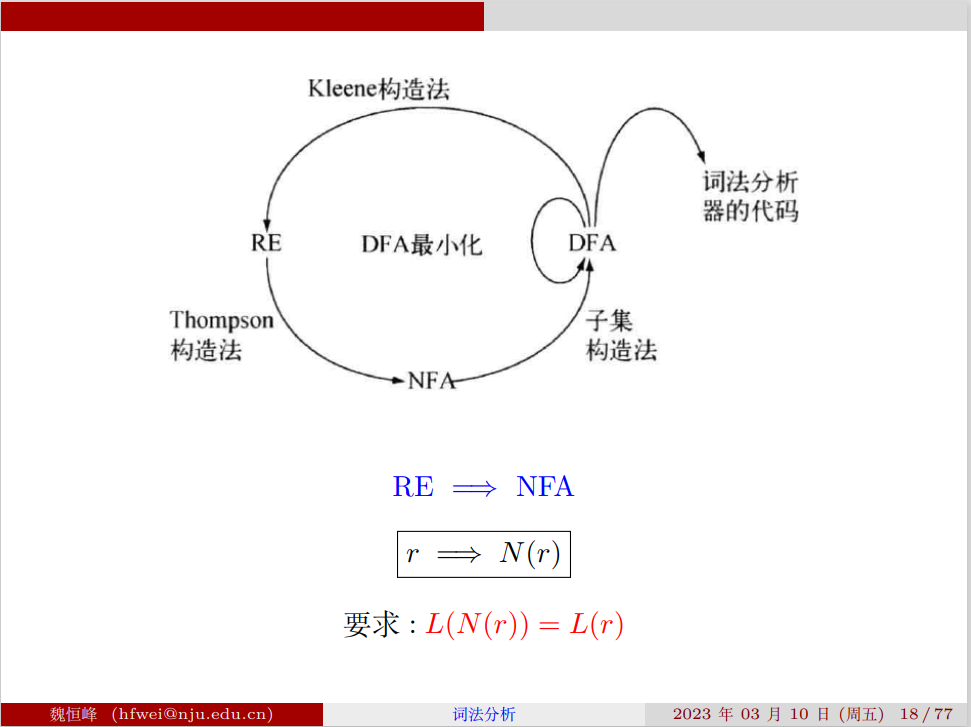
# Thompson 构造法（从 RE 到 NFA）
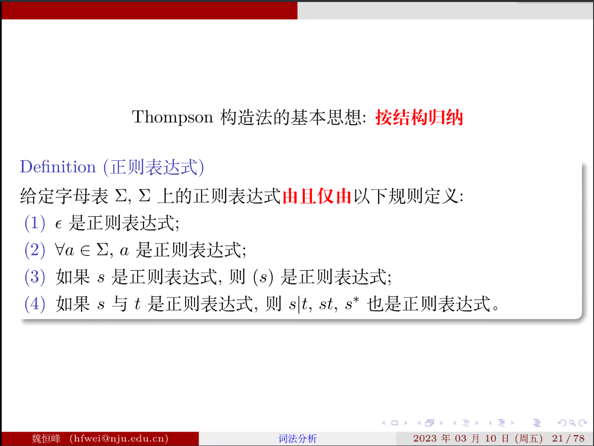
构造方法如下：
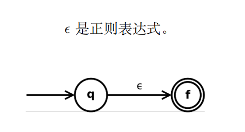
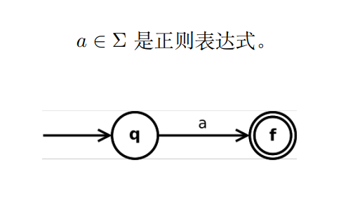
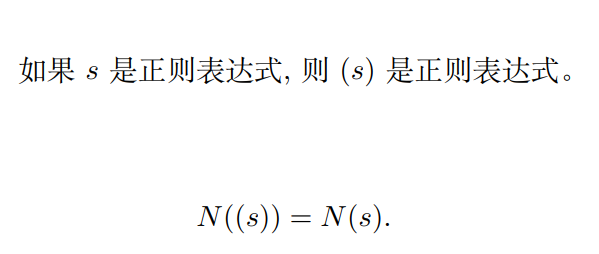
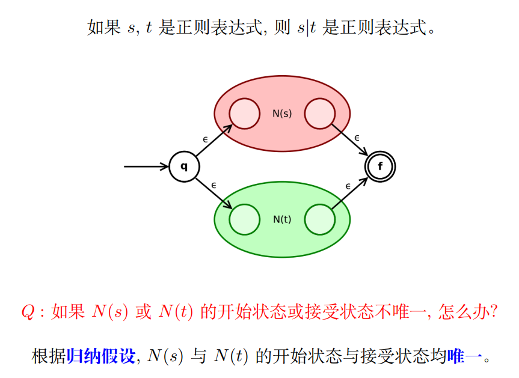
这里是 “一边做构造 一边做证明”，只要保证从最基本的情况开始，每一步 NFA 的构造都保证只会有唯一的开始状态和接受状态即可。综合所有情况下的构造方法，可以看到这一点是正确的。
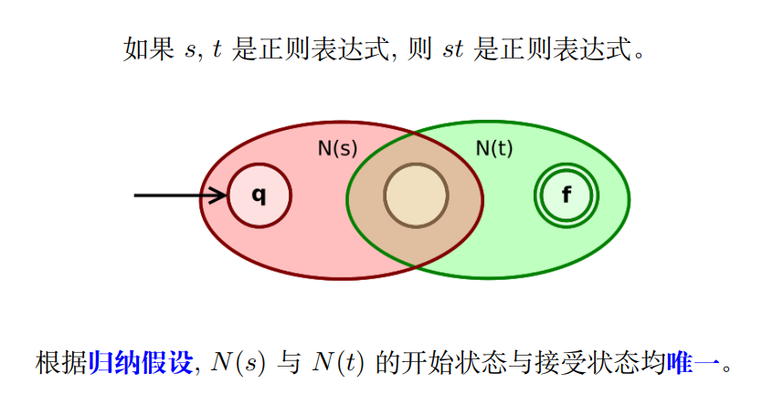
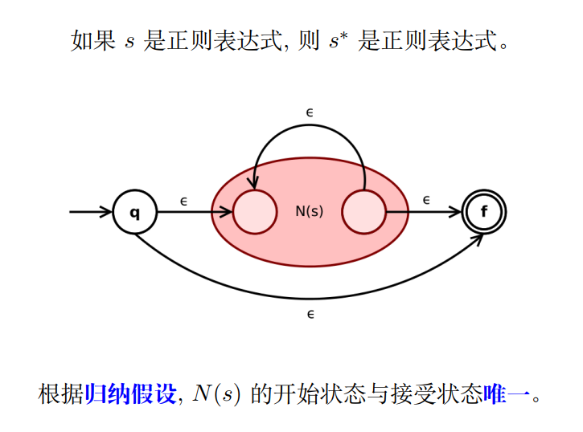
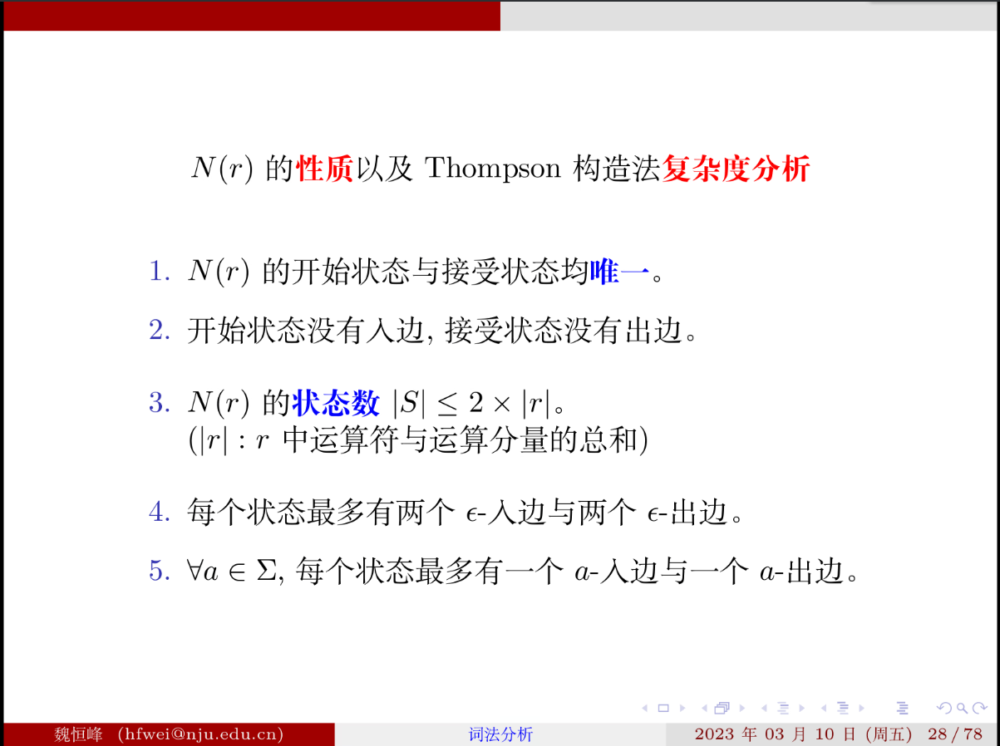
关于第三点中的运算符合运算分量 gpt 的解释：
正则表达式语言 r 的运算符和运算分量：
常见运算符：
- |：或运算符，用于匹配两种情况中的一种。
- ()：分组运算符，用于将多个运算分量组合起来形成一个单元，进行整体匹配或量词修饰。
- []：字符类运算符，用于匹配方括号内任意一个字符。
- {}：重复运算符，用于指定运算分量重复出现的次数。
运算分量：
- 字符：指定具体的字符，例如 a、b、c 等。
- 元字符：具有特殊意义的字符，例如 *、?、+ 等。
- 点号：匹配除换行符以外的任意字符。
这些运算符和运算分量可以组合在一起形成复杂的正则表达式，用于模式匹配和字符串搜索。
在每一步构造的时候，最多加一个起始状态，一个终止状态，总共进行了 | r | 次，所以第三点正确
举个例子：(a|b)*abb 的构造（考试会考）
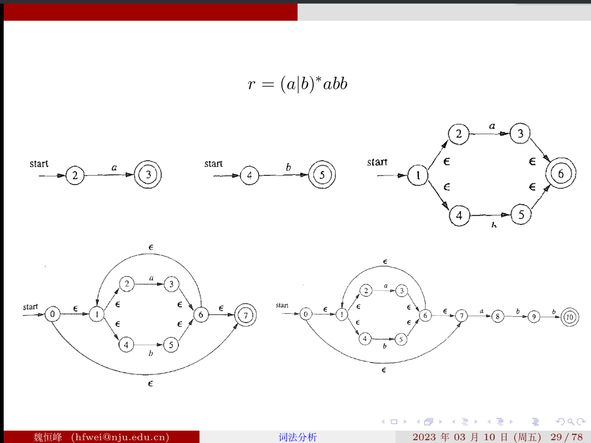
# 子集构造法 (从 NFA 到 DFA 的转换)：
举个例子： 可以看出简化了很多，并且遇到某一词法单元改走到那一步更加明确了
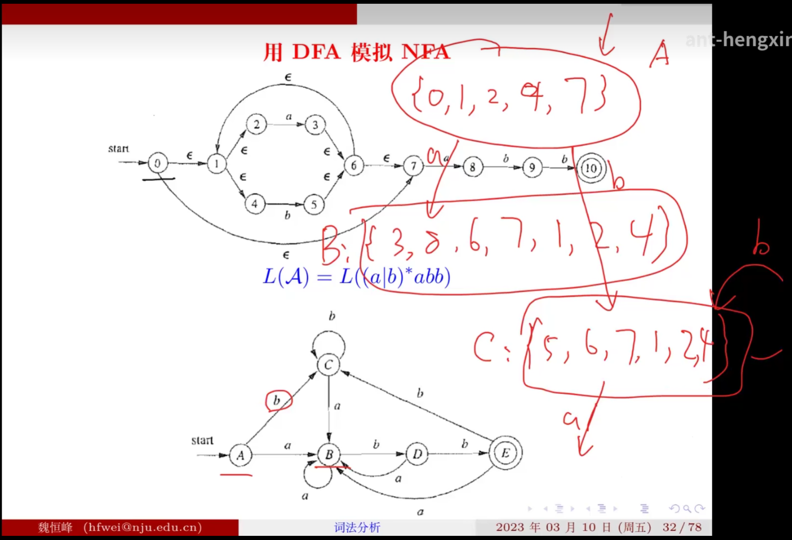
从 0 号状态开始，通过 转移可以到达 1,2,4,7 因此这 5 个状态合为一个状态 A，然后看 A 状态下可以通过 a 字符和 b 字符转移到哪些状态，即下图的规则三，然后利用规则二和规则一求可到达状态的 闭包，这个过程循环下去直到结束。
什么时候算结束？
只要 DFA 的某个状态所对应的 NFA 中的状态集合中含有接受状态，则 DFA 的这个状态是接受状态
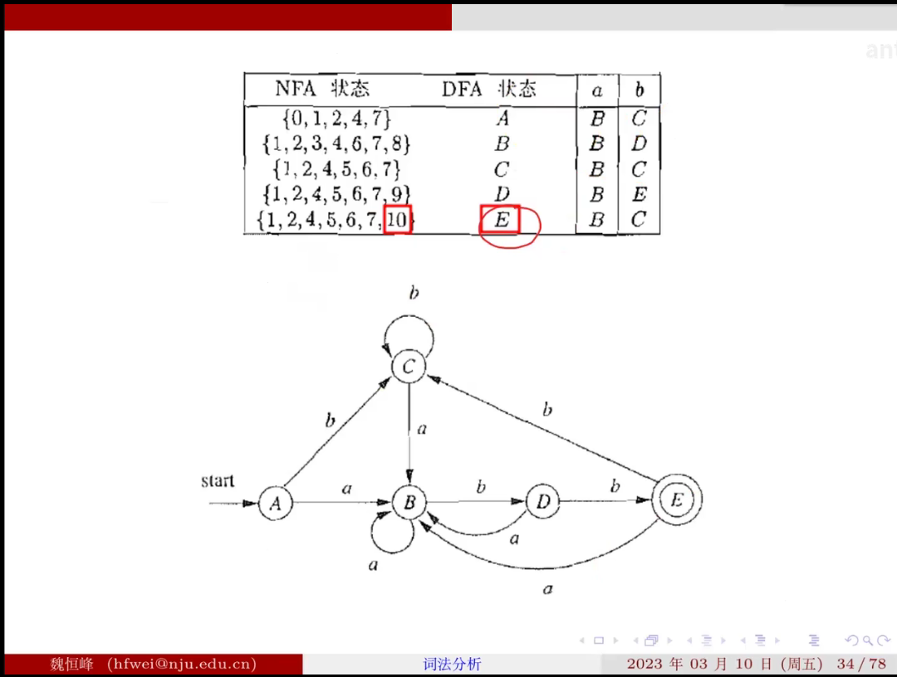
这里 E 对应的 NFA 状态中有 10 号状态，而 10 号状态是 NFA 的接受状态，所以 E 也是接受状态
三个基本规则如下 其中 s 是单个状态 T 是一个状态子集
这个过程一定会有一个终点
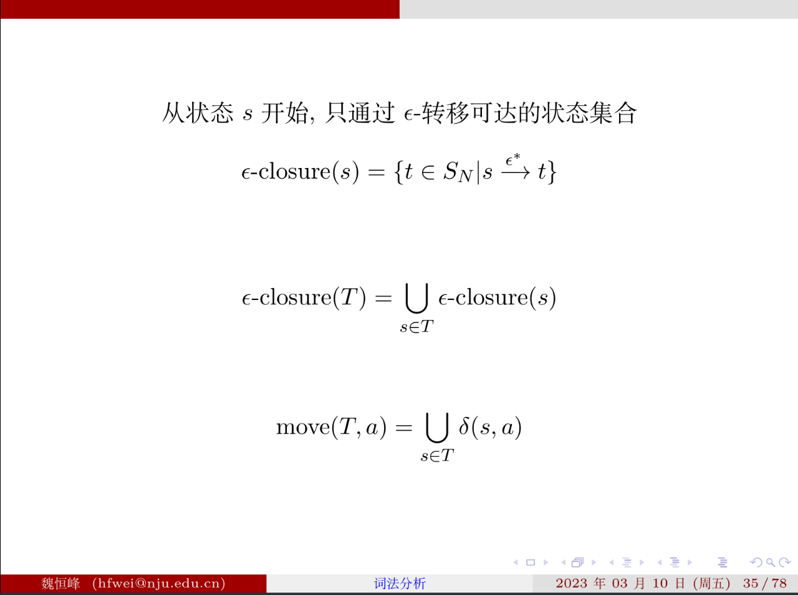
原理如下：
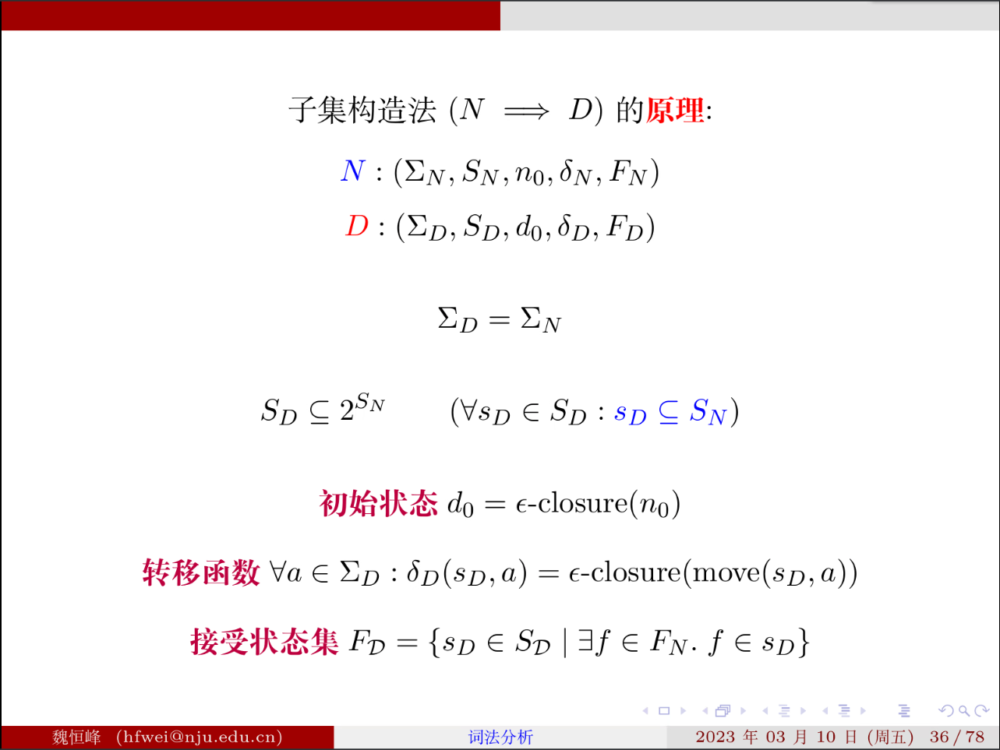
复杂度：NFA 有 n 个状态 DFA 最多有 2 的 n 次方个状态 指数爆炸
# DFA 最小化算法
问题一： 如何定义等价状态
想法一： 其中波浪号意为等价
即 s 状态等价与 t 状态 当且仅当 任意 a 属于字母表 s 与 t 在 a 输入下发生转移后的状态是等价的
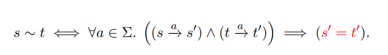
但是这个定义是错误的 课件上有反例
反过来是正确做法：
核心思想做划分而非合并
接受状态与非接受状态必定不等价 ，然后接着划分，直到不能再分为止。每一步做迭代 对一个状态集合的任意两个状态，如果在字符 a 的驱动下跑到了不同的组，则这两个状态一定不等价。
做之前要补齐死状态。
因为这是所谓的 DFA 最小化算法 首先得保证最小化的是一个 DFA。比如下图中如果一开始只有红字部分，需要加上黄字部分补成一个 DFA。
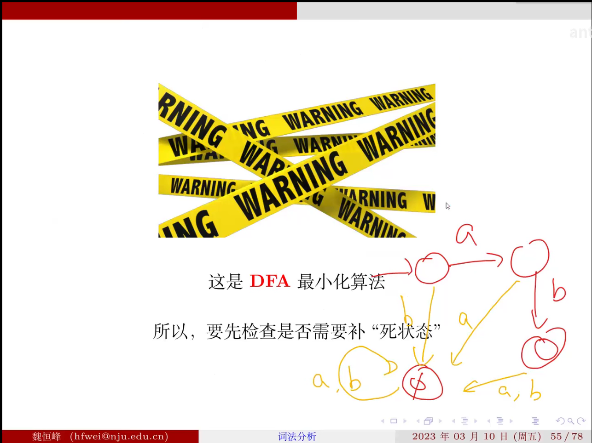
如果某个等价类包含初始状态，那么合并后这个等价类就是初始状态，如果某个等价类包含结束状态，那么合并后这个等价类就是合并状态。
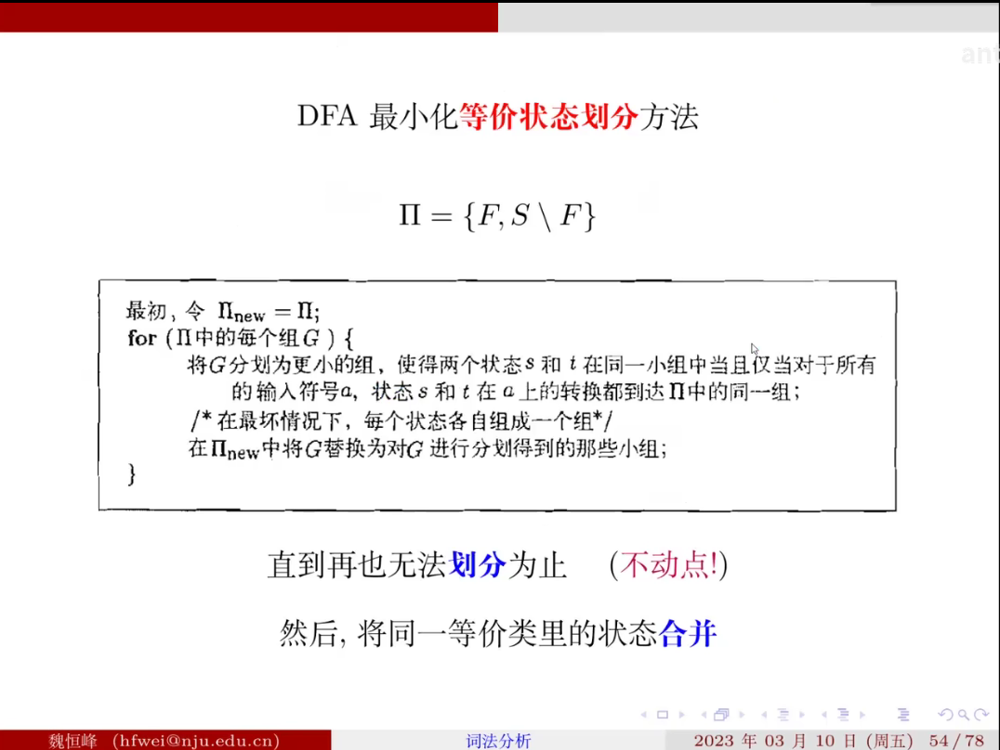
# 复杂度
太复杂了
# 从 DFA 得到词法分析器
需要消除死状态 ，避免徒劳消耗输入流
模拟运行该 DFA, 直到无法继续为止（输入结束或状态无转移）：假设此时状态为 s，若 s 为接受状态，则识别成功，否则，回溯（包括状态与输入流）至最近一次经过的接受状态，识别成功；若没有经过任何接受状态，则报错（忽略第一个字符，重新开始）
用在词法分析器场景下的 DFA 的最小化第一步不同，所有的接受状态一定不等价
# 根据 DFA 得到 RE (非重点)
# lab 1
编程一小时 配置环境一天的典型代表。
# 实验输入
本次实验的输入是一个包含了 SysY 源代码的文件，你的程序需要接受一个文件名作为参数
# 实验内容
# Part1 词法分析
- 本次实验你需要完成一个词法分析器对使用 SysY 语言书写的源代码进行词法分析，要求如下
- 本次实验要求通过标准错误输出（stderr, 如 System.err 等）， 打印程序的 所有 运行结果。
- 当包含词法错误时：对于包含词法错误的文件，你需要打印所有错误信息，格式为：
Error type A at Line [lineNo]:[errorMessage]，其中lineNo为出错的token首个字符所在行的行号，errorMessage可自行定义，本实验不做要求，只要冒号前的信息正确即可。 - 当不包含词法错误时：对于没有任何词法错误的文件，你需要打印所有识别到的
Tokens信息，具体输出格式可以参见样例一。特别要求：输出时忽略所有注释，对十六进制和八进制数字常量输出token文本时需输出其十进制的值
# 样例
输入
int main()
{
// line comment
/*
block comment
*/
int i = 0x1;
}
输出
INT int at Line 1. | |
IDENT main at Line 1. | |
L_PAREN ( at Line 1. | |
R_PAREN ) at Line 1. | |
L_BRACE { at Line 2. | |
INT int at Line 7. | |
IDENT i at Line 7. | |
ASSIGN = at Line 7. | |
INTEGER_CONST 1 at Line 7. | |
SEMICOLON ; at Line 7. | |
R_BRACE } at Line 8. |
解释：
每行输出一个 token 的信息，输出格式为
[token类型] [token文本] at Line [此token首个字符所在行的行号].复制到剪贴板复制失败复制成功!
输出时忽略所有注释，对十六进制和八进制数字常量输出 token 文本时需输出其十进制的值
特别注意，遇到如 int 2i = 08; 这种输入时，请将 2i 识别为 INTEGER_CONST 和 IDENT ， 08 识别为两个 INTEGER_CONST ，这种我们不认为是词法错误，这种错误将在后面的实验中处理
# 样例二
输入:
int main(){
int i = 1;
int j = ~i;
}复制到剪贴板复制失败复制成功!
输出：
Error type A at Line 3: Mysterious character "~".
# 实验过程
-
第一个难题就是怎么在 windows 里的 IDEA 编程，但是运行和调试环境是虚拟机中的 ubuntu20.04+lab0 配置好的环境 想法就是用 IDEA 的 remote deployment 功能，在网上搜索教程后发现我的 IDEA 竟然没有这个功能，原因是我的是 community 版本，所以卸载了之前的 IDEA 装了专业版。然后 remote deployment 原理应该是使用 ssh 连接，虽然虚拟机是装在电脑里，但其实和与远程服务器相连原理是一样的。
-
然后编写.g4 文件比较顺利，生成了 SysYlexer.java 文件，但是在 main 函数中使用 SysYlexer 类也遇见了困难，首先是导入 antlr，IDEA 一直报错无法解析 symbol antlr，但是 lab0 中我应该是配好了 antlr 环境的，不知道为什么，所以还是用 IDEA 的 libraries 中导入了 antlr 才好 (回来再看，IDEA 是可以导入本地的 jar 包的)
-
第三个难题就是删除 SysYLexer 中自带的 ErrorListeners, 使用自己编写的 errorlisteners，这里蚂蚁老师上课应该是没有讲的，所以也是无从下手。后面借助搜索引擎和 ChatGPT 学了很久才会。原理很简单，先放上自己实现的 myErrorListener 如下：
public static class myErrorListener extends BaseErrorListener{
public void syntaxError(Recognizer<?, ?> recognizer,
Object offendingSymbol,
int line, int charPositionInLine,
String msg,
RecognitionException e)
{System.err.println("Error type A at Line "+line+": "+msg);
error = true;
}主要是重写了 syntaxError 这个函数，他里面的参数应该是报错相关的信息，这里只用到了 line（出错的行）和 msg（具体的报错信息），其它的是什么意思忘记了。应该是每出现一个错误就会调用一次 syntaxError 函数。
-
然后放一下 main 函数部分：
import org.antlr.v4.runtime.*;
import java.io.IOException;
import java.util.Collection;
import java.util.List;
public class Main
{public static boolean error = false;
public static void main(String[] args) throws IOException {
if (args.length < 1) {
System.err.println("input path is required");
}String source = args[0];
CharStream input = CharStreams.fromFileName(source);
SysYLexer sysYLexer = new SysYLexer(input);
sysYLexer.removeErrorListeners();
sysYLexer.addErrorListener(new myErrorListener());
List<Token> tokens = (List<Token>) sysYLexer.getAllTokens();
if (error)
return;
String[] rulenames = sysYLexer.getRuleNames();
for (Token token : tokens) {
String tokenType = rulenames[token.getType()-1];
String tokenText = toDemical(token.getText());
String tokenLine = ""+token.getLine();
System.err.println(tokenType + " " + tokenText + " at Line "+tokenLine+'.');
}}public static class myErrorListener extends BaseErrorListener{
public void syntaxError(Recognizer<?, ?> recognizer,
Object offendingSymbol,
int line, int charPositionInLine,
String msg,
RecognitionException e)
{System.err.println("Error type A at Line "+line+": "+msg);
error = true;
}}public static String toDemical(String text) {
if(text.matches("0[0-7]+")) {
return String.valueOf(Integer.parseInt(text.substring(1),8));
} else if (text.matches("0[xX][0-9a-fA-F]+")) {
return String.valueOf(Integer.parseInt(text.substring(2),16));
} else {
return text;
}}}反正做的时候除了文档里给的框架几乎每一行都想了很久。
-
代码写完后上传又有问题，可能是之前 make compile , make clean 太多次了，导致压缩包超过了 10M 的限制，后来参考助教给的记一次删除 Git 记录中的大文件的过程 - HollisChuang's Blog 按里面的步骤一步步做才完成上传，比较幸运的是一次就 AC 了。（至于为什么压缩包会那么大，我的理解是改动了太多次代码 make compile 了太多次，且每次 git 都会保存版本信息以便于回退，所以改动的所有版本其实都还在 git 保存的隐藏文件夹下的，所以整个目录就会变得很大了）